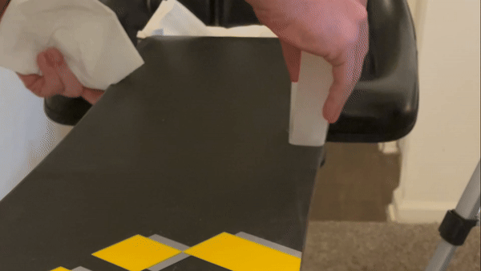

Wax Your Way to Smooth Rides
Transform your snowboard or skis in just a few easy steps! Whether you're preparing for fresh powder or keeping your gear in top condition, this guide will help you glide effortlessly and extend the life of your equipment.
Benefits of Waxing
Performance
A waxed snowboard or pair of skis will achieve:
- Faster acceleration and less resistance on the snow.
- More consistent riding and carving.
- Quicker gliding along a catwalk or slow section.
Longevity
Waxing provides several long-term benefits:
- Prevents oxidation and drying of the base material.
- Maintains flexibility of the board.
- Reduces risks of cracks or damage.
- Minimizes abrasions to the base material by keeping out dirt and rock sediment, which would otherwise cause friction and wear.
Explanation: Why This Method?
Ease
This process can be completed, even by a beginner, in 10–20 minutes. Additionally, since wax scraping is unnecessary with this method, less preparation and cleanup are required.
Cost
Much cheaper than a professional job; a heat gun, wax, and paper towels are the only initial investments. A block of wax lasts for several re-waxings since there is no wasted wax from scraping.
You can get complete kits like these, but all you really need is the wax and a source of heat (with a heat gun and paper towels you will not need to scrape excess wax off, compared to using an iron)
Frequency
Frequent good waxing is better than infrequent great waxing with professional tools. Even if your end result isn’t perfect, it’s better than riding with a dry or infrequently waxed board!
Process Steps
Overview
- Preparation and Setup: Gather materials and position the board for waxing
- Check Wax Level: Check the amount of wax already on the board
- Spread Wax: Coat the board with fresh wax
- Apply Heat: Heat the added wax until melted
- Smooth Wax: Spread the layer of melted wax to a smooth finish
- Cooldown: Allow the board to cool, and pack up materials
The process is fairly simple overall, and can be taken in sections over the board. Waxing involves applying and heating fresh wax to the board, and then spreading the layer with paper towels to smoothness
Preparation
Gather Materials
- Required: Heat gun, wax block, paper towels, snowboard/skis.
- Protection: Heat-resistant gloves, tarp or newspaper, and safety glasses (optional but recommended).
- Conveniences: Extension cord, sawhorses (or alternatives like chairs or a table), and cloth towels to prevent scratches.
Set Up Workstation
Flip the board upside down and prop it up on sawhorses, chairs, or a table. Consider wedging a folded towel between the board and the support surface to prevent scratches.

Check Current Wax Level
Rub a thin line of wax on the board and melt it with the heat gun for a few seconds. Observe how reflective the surrounding area is. The more reflective the area, the more wax your board already has. Adjust the amount of wax applied in the next step accordingly.

For reference, our demo board had plenty of wax. If you need lots of wax, you'll notice a stark difference between the squiggle and the rest of the board!
Spread New Wax
Rub the wax block all over the board in the direction of travel (longways). Apply more pressure if your board is lower on wax as determined in the previous step. Focus more pressure on the edges, where most pressure and wax use occur. Once the board is fully coated, proceed to the next step.


Apply Heat
Burn notice: Don’t hold the heat gun in one spot for more than 8–10 seconds to avoid surface damage. Keep the heat gun moving.
Heat sections (about ¼ of the surface) at a time using a slow, smooth hash pattern with overlapping passes. Continue until the cold wax's fogginess turns into shiny, reflective melted wax. The melted wax should resemble the top of a lit candle.

Smooth Wax
Rub the melted wax with a paper towel in the direction of travel (longways). This will create a uniform surface and absorb excess wax, eliminating the need for scraping. Reapply the heat gun to ensure the surface is smooth and blotch-free. Repeat these steps for the entire board.


Cooldown
Let the wax cool and harden for at least 30 minutes before using the board. Once cooled, you’re ready to hit the slopes!
Conclusion
Congratulations! By following these steps, you’ve ensured your snowboard or skis are properly waxed and ready for optimal performance on the slopes. Whether you're carving through fresh powder, cruising down groomed trails, or gliding across a catwalk, a well-waxed board enhances your ride and protects your gear.
Remember, regular maintenance is the key to extending the life of your equipment and improving your experience on the mountain. This quick and cost-effective method empowers you to keep your gear in peak condition without professional tools or services.
So grab your gear, hit the snow, and enjoy the smooth, fast, and exhilarating ride that a well-waxed board offers. Happy shredding!